配件 V2 · 93件 / 17个弹匣接口族
 微型反射瞄具att_optic01
微型反射瞄具att_optic01 全息瞄具att_optic02
全息瞄具att_optic02 低倍率光学瞄具att_optic03
低倍率光学瞄具att_optic03 精密光学瞄具att_optic04
精密光学瞄具att_optic04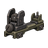
开放式机械瞄具att_optic05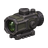
紧凑棱镜瞄具att_optic06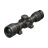
低倍可变光学瞄具att_optic07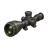
远程战术瞄准镜att_optic08 垂直握把att_grip01
垂直握把att_grip01 斜角握把att_grip02
斜角握把att_grip02 紧凑握把att_grip03
紧凑握把att_grip03 人体工学握把att_grip04
人体工学握把att_grip04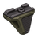
短型阻手器att_grip05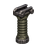
加重垂直握把att_grip06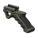
稳定战术握把att_grip07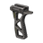
轻型竞技握把att_grip08 固定枪托att_stock01
固定枪托att_stock01 伸缩枪托att_stock02
伸缩枪托att_stock02 精密枪托att_stock03
精密枪托att_stock03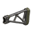
轻量镂空枪托att_stock04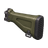
加重稳定枪托att_stock05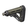
缓冲减震枪托att_stock06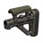
精英战术枪托att_stock07 标准制退器att_muzzle01
标准制退器att_muzzle01 横向补偿器att_muzzle02
横向补偿器att_muzzle02 复合补偿器att_muzzle03
复合补偿器att_muzzle03 精密枪口装置att_muzzle04
精密枪口装置att_muzzle04 收束器att_muzzle05
收束器att_muzzle05 扩散器att_muzzle06
扩散器att_muzzle06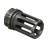
鸟笼式消焰器att_muzzle07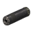
紧凑型消音器att_muzzle08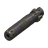
重型战术消音器att_muzzle09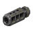
高效多孔制退器att_muzzle10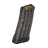
STANAG 竞赛型弹匣att_mag_556_competition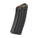
STANAG 聚合物弹匣att_mag_556_polymer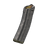
STANAG 40发扩容弹匣att_mag_556_40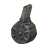
STANAG 60发弹鼓att_mag_556_60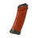
AK 5.45 竞赛型弹匣att_mag_545x39_competition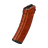
AK 5.45 聚合物弹匣att_mag_545x39_polymer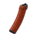
AK 5.45 45发扩容弹匣att_mag_545x39_45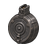
AK 5.45 60发弹鼓att_mag_545x39_60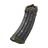
AK 7.62 竞赛型弹匣att_mag_762x39_competition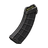
AK 7.62 聚合物弹匣att_mag_762x39_polymer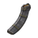
AK 7.62 40发扩容弹匣att_mag_762x39_40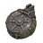
AK 7.62 75发弹鼓att_mag_762x39_75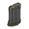
FAMAS 竞赛型弹匣att_mag_556_famas_competition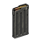
FAMAS 聚合物弹匣att_mag_556_famas_polymer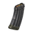
Galil 竞赛型弹匣att_mag_556_galil_competition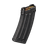
Galil 聚合物弹匣att_mag_556_galil_polymer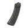
Galil 50发扩容弹匣att_mag_556_galil_50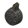
Galil 75发弹鼓att_mag_556_galil_75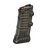
G36 竞赛型弹匣att_mag_556_g36_competition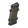
G36 聚合物弹匣att_mag_556_g36_polymer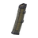
G36 40发扩容弹匣att_mag_556_g36_40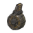
G36 60发弹鼓att_mag_556_g36_60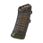
SIG 550 竞赛型弹匣att_mag_556_sig550_competition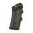
SIG 550 聚合物弹匣att_mag_556_sig550_polymer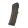
SIG 550 40发扩容弹匣att_mag_556_sig550_40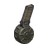
SIG 550 60发弹鼓att_mag_556_sig550_60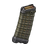
AUG 竞赛型弹匣att_mag_556_aug_competition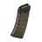
AUG 聚合物弹匣att_mag_556_aug_polymer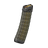
AUG 42发扩容弹匣att_mag_556_aug_42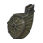
AUG 60发弹鼓att_mag_556_aug_60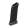
Vityaz 竞赛型弹匣att_mag_9mm_vityaz_competition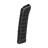
Vityaz 聚合物弹匣att_mag_9mm_vityaz_polymer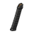
Vityaz 40发扩容弹匣att_mag_9mm_vityaz_40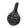
Vityaz 50发弹鼓att_mag_9mm_vityaz_50MP5 竞赛型弹匣att_mag_9mm_mp5_competitionMP5 聚合物弹匣att_mag_9mm_mp5_polymerMP5 40发扩容弹匣att_mag_9mm_mp5_40MP5 50发弹鼓att_mag_9mm_mp5_50UMP 竞赛型弹匣att_mag_45acp_ump_competitionUMP 聚合物弹匣att_mag_45acp_ump_polymerUMP 35发扩容弹匣att_mag_45acp_ump_35UMP 50发弹鼓att_mag_45acp_ump_50Glock 竞赛型弹匣att_mag_9mm_glock_competitionGlock 聚合物弹匣att_mag_9mm_glock_polymerBeretta 92 竞赛型弹匣att_mag_9mm_beretta92_competitionBeretta 92 聚合物弹匣att_mag_9mm_beretta92_polymerM1911 竞赛型弹匣att_mag_45acp_m1911_competitionM1911 聚合物弹匣att_mag_45acp_m1911_polymerSaiga-12 竞赛型弹匣att_mag_12g_saiga_competitionSaiga-12 聚合物弹匣att_mag_12g_saiga_polymerSaiga-12 12发扩容弹匣att_mag_12g_saiga_12Saiga-12 20发弹鼓att_mag_12g_saiga_20SR-25 竞赛型弹匣att_mag_68x51_sr25_pattern_competitionSR-25 聚合物弹匣att_mag_68x51_sr25_pattern_polymerSR-25 25发扩容弹匣att_mag_68x51_sr25_pattern_25RM277 竞赛型弹匣att_mag_68x51_rm277_competitionRM277 聚合物弹匣att_mag_68x51_rm277_polymerRM277 25发扩容弹匣att_mag_68x51_rm277_25SIG SLX 战术抑制器att_muzzle11Delta P BREVIS II 抑制器att_muzzle12